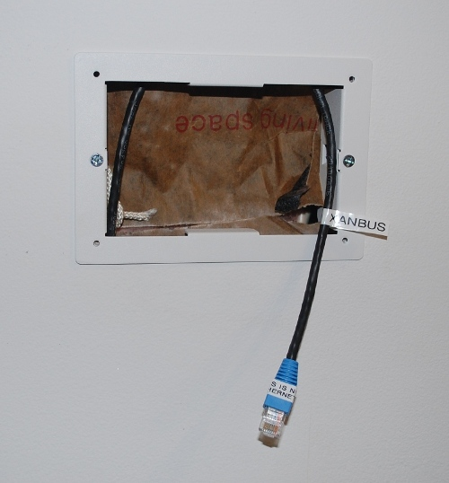
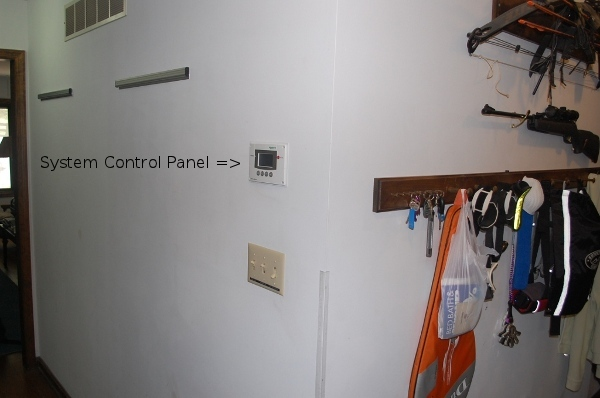
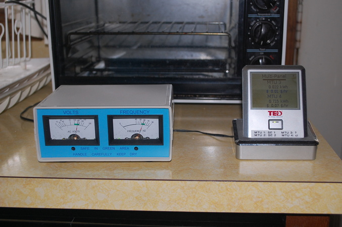
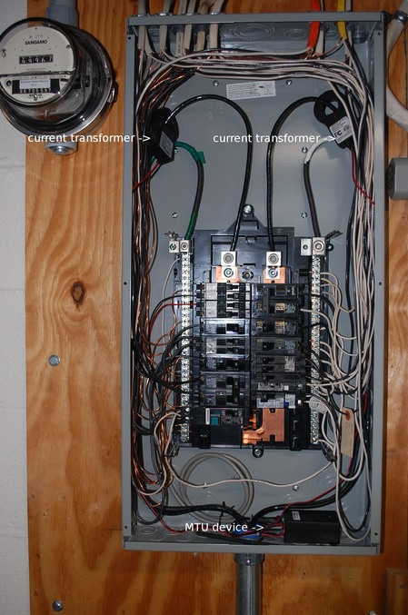
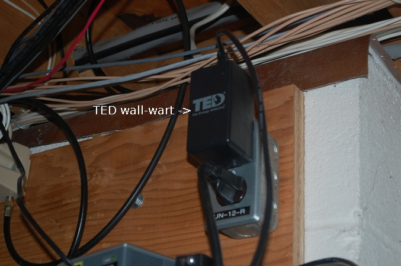

|
Home About VSI What We Do Who We Are Contact Info Resources Blog Data Archives Export |
Photo-voltaic Power Generation SystemBackup Power Considerations
Our relatively rural location on Sugarloaf Mountain in Frederick County leaves us at the tail
end of an electric power distribution line that runs though a heavily wooded area, so power
outages are not uncommon. Although we don't keep detailed records, we probably average a total
of a couple of days per year of power outages, and we've experienced individual outages of up
to five days duration.
Years ago an 8 kilowatt gasoline powered generator was installed at the property, hardwired to the house, to provide power to a "critical loads" subpanel that is isolated from the local grid by a transfer switch. With that generator running we have running water, lights in the most frequently used areas (bathrooms, kitchen including outlets for the microwave ovens, several general living areas), freezers and refridgerators, as well as the backup oil furnace, smoke alarm system, and the phone system. But, the generator is noisy and consumes roughly a gallon of fuel per hour and so we were unable (or unwilling) to run it constantly during an outage. Typical practice during an outage has been to run the generator for one or two hours every four to six hours, to keep the freezer and refridgerator contents cold. We would time our activities (food preparation, showers, phone calls) accordingly. At night we would use kerosene lamps and flashlights for illumination. However, the initial utility power outage and termination of each generator run cycle would crash the computers. With multiple small UPSes (four at last count) the computers themselves were not harmed, but manually powering the UPSes up and down and rebooting the key computers for each generator run cycle was generally too tedious to bother with. With the location of more mission critical systems at the premises (DNS servers) computer uptime has a become a more significant consideration. The cost of a UPS system of sufficient capacity to run the critical systems for 4-6 hours (the interval between generator run cycles) would be thousands of dollars. While we are used to dealing with power outages, the battery backup will introduce a new complication. During a grid-out situation we will now need to watch the level of battery discharge. For cost reasons we chose a hybrid inverter (Xantrex XW 6048) that uses a proprietary communications bus and protocol ("Xanbus", apparently a customized Modbus protocol over a CANBUS physical layer) and not Ethernet and TCP/IP. That is unfortunate as the house already has both wired and wireless LANs that could be used to access an IP based monitor from anywhere. Instead we are limited to one monitor at a fixed location. We chose a wall in a central hallway on the ground floor, only a few steps from the kitchen where we seem to spend much of our time during power failures. The extra-cost monitor (Xantrex XW System Control Panel) is wired using the same Cat5 four-pair cable and RJ45 jacks used for Ethernet. There are two common "pinouts" (wiring schemes) used for Cat5 cable, T568A and T568B. Either scheme is valid as long as both ends of a cable are crimped the same way. T568B appears to be the most commonly used and has been chosen as the standard for all in-house wiring here. The instructions that came with the SCP stated that the Cat5 cable should be wired per T568A, but the Cat5 patch cable included with it was wired to T568B. I chose to use T568B and labeled the cable at both ends to minimize the risk of confusing it with Ethernet cabling.  
In the past during a grid outage we have watched two different monitors when running on the generator. One is an analog frequency and voltage monitor, the other a wireless display of selected outputs from the Energy Detective power monitor.  Note the TED monitor is showing a load of .715kW (mislabeled as "kWh") or 715 watts for the critical loads panel (MTU 4). The TED system consists of one or more MTU devices with two current clamps and a small embedded computer in the form of a plug-in "wall wart" that collects, stores, and displays the current and voltage readings. The MTUs transmit to the wall-wart over the power lines, the wall-wart hosts a web server that is accessible via Ethernet or a wireless remote display.  
With the generator capacity of 8kW and critical panel loads typically under 2kW we haven't had to pay much attention to the critical panel loads. That will change with the PV battery backup during an extended outage. The frequency/voltage meter will be of limited interest and will be relegated to the basement next to the Xantrex hybrid inverter. Instead we will watch the TED monitor for the total critical panel load and the wall mounted Xantex control panel for the current battery voltage. |
|
|